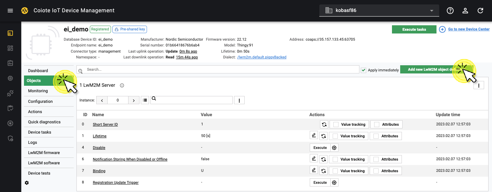

Edge Impulse & Thingy:91#
Introduction#
This example runs a motion detection model using the accelerometer of the Thingy:91 development kit, built with Edge Impulse. It streams the detected motion patterns to a LwM2M server.

Detecting the motion patterns: "idle" and "snake"
LwM2M Objects used:
- Security:
/0 - Server:
/1 - Device:
/3 - Pattern Detector:
/33650(custom object)
Prerequisites#
- Thingy:91
- Coiote IoT DMaccount
- Installed Zephyr dependencies
- Serial communication program e.g. minicom or RealTerm (for Linux or Mac) or PuTTy (for Windows)
Warning
This tutorial uses the Arm Embedded Toolchain, which is not compatible with the Apple M1 chipset.
Compilation#
Clone the Anjay Zephyr repository#
Open the command line interface on your machine and clone the Anjay Zephyr repository usingGit:
git clone https://github.com/AVSystem/Anjay-zephyr-client
Set West manifest path toAnjay-zephyr-client/ei_demo, and manifest file towest-nrf.ymland run west update:
west config manifest.path Anjay-zephyr-client/ei_demo
west config manifest.file west-nrf.yml
west update
Update the endpoint name and PSK (optional)#
Info
The default credentials are:
- Endpoint name:
Anjay-zephyr-client - PSK (Pre-Shared Key):
test
The Endpoint Name and PSK can be configured using menuconfig.
To open menuconfig, run the following command:
west build -b thingy91_nrf9160_ns -p -t menuconfig
Open up the folder anjay-zephyr-client --->
Create a new Endpoint Name and PSK Key:

After making the changes, press Q to close the config menu and Y to save.
Compile the project#
Go to the ei_demodirectory and compile the project for the Thingy:91:
west build -b thingy91_nrf9160_ns
Write the firmware to the Thingy:91#
- Find the build file in the directory
/build/zephyr, named:app_signed.hex. - Connect the Thingy:91 to a USB port of your machine.
- Flash the file using the Programmer application in nRF Cloud for Desktop via MCUboot.
Find more information on flashing the Thingy:91 using MCU Boot here.
Connect the Thingy:91 to Coiote IoT Device Management#
To connect to Coiote IoT Device Management LwM2M Server, please register at eu.iot.avsystem.cloud.
To connect the board:
- Log in to Coiote IoT DM and selectDevice Inventory from the left side menu.
- InDevice Inventory, select Add device.
-
Select theConnect your LwM2M device directly via the Management servertile.

-
In theDevice credentialsstep:
- Add the Endpoint name, the default endpoint name is:
Anjay-zephyr-client - Key Identity is the same as the endpoint name
- Add the Key, the default key is:
test - Click Add device andthen Confirmin the confirmation pop-up

- Add the Endpoint name, the default endpoint name is:
Add the Pattern Detection Object to Coiote#
Object ID /33650 refers to the pattern detection model and indicates which pattern has been detected.
To add this custom object, go to the device overview page in Coiote IoT DM and click the top-right button: Go to previous version.

In the left-side menu, click Objects.
Click the button at the top right corner: Add new LwM2M object definition.

To add a new object definition, copy-paste the following XML file and click Import.
<?xml version="1.0" encoding="UTF-8"?>
<LWM2M xmlns:xsi="http://www.w3.org/2001/XMLSchema-instance" xsi:noNamespaceSchemaLocation="http://openmobilealliance.org/tech/profiles/LWM2M.xsd">
<Object ObjectType="MODefinition">
<Name>Pattern detector</Name>
<Description1><![CDATA[This object is used to report the pattern detected by the ML-based classification algorithms and to count the number of times it has been detected.]]></Description1>
<ObjectID>33650</ObjectID>
<ObjectURN>urn:oma:lwm2m:ext:33650</ObjectURN>
<LWM2MVersion>1.0</LWM2MVersion>
<ObjectVersion>1.0</ObjectVersion>
<MultipleInstances>Multiple</MultipleInstances>
<Mandatory>Optional</Mandatory>
<Resources>
<Item ID="2000">
<Name>Detector State</Name>
<Operations>R</Operations>
<MultipleInstances>Single</MultipleInstances>
<Mandatory>Mandatory</Mandatory>
<Type>Boolean</Type>
<RangeEnumeration></RangeEnumeration>
<Units></Units>
<Description><![CDATA[The current state of a detector.]]></Description>
</Item>
<Item ID="2001">
<Name>Detector Counter</Name>
<Operations>R</Operations>
<MultipleInstances>Single</MultipleInstances>
<Mandatory>Mandatory</Mandatory>
<Type>Integer</Type>
<RangeEnumeration></RangeEnumeration>
<Units></Units>
<Description><![CDATA[The cumulative value of patterns detected.]]></Description>
</Item><Item ID="2002">
<Name>Pattern Name</Name>
<Operations>R</Operations>
<MultipleInstances>Single</MultipleInstances>
<Mandatory>Mandatory</Mandatory>
<Type>String</Type>
<RangeEnumeration></RangeEnumeration>
<Units></Units>
<Description><![CDATA[Name of the pattern being detected.]]></Description>
</Item>
</Resources>
<Description2></Description2>
</Object>
</LWM2M>
After importing the object definition, go back to the New Device Center by clicking the button in the top-right corner: Go to new Device Center.

If the import was successful, you will find the object: /33650 Pattern detector under Data model.

Pattern detection#
The object: /33650 can distinguish three patterns:
- Idle
- Circle
- Snake
Each pattern is defined as an Object Instance. The number of times the pattern has been recognized is shown as the Detector Counter.
To see the Detector Counter for each pattern, select the corresponding Object Instance by clicking the down-arrow: .

Now start moving the Thingy:91 around to detect all three patterns. When a new motion pattern is detected, the Detector Counter increases and the LED color on the device will change.
Set observations#
The LwM2M standard allows you to instruct the device about the minimum and maximum allowed intervals between two updates. The intervals can be set from 1 second to multiple days. To instruct the device, an OBSERVE operation can be sent from the LwM2M Server to the LwM2M Client.
For more information, see how to set observations